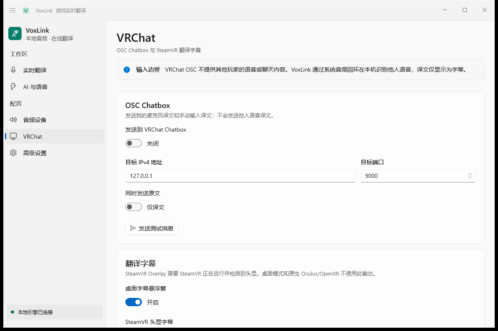
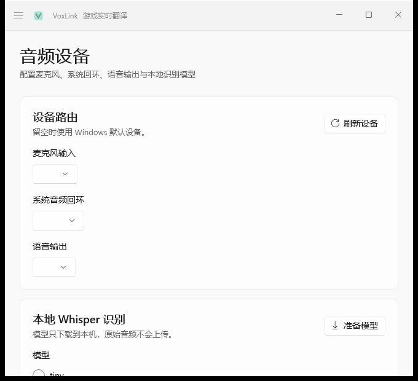
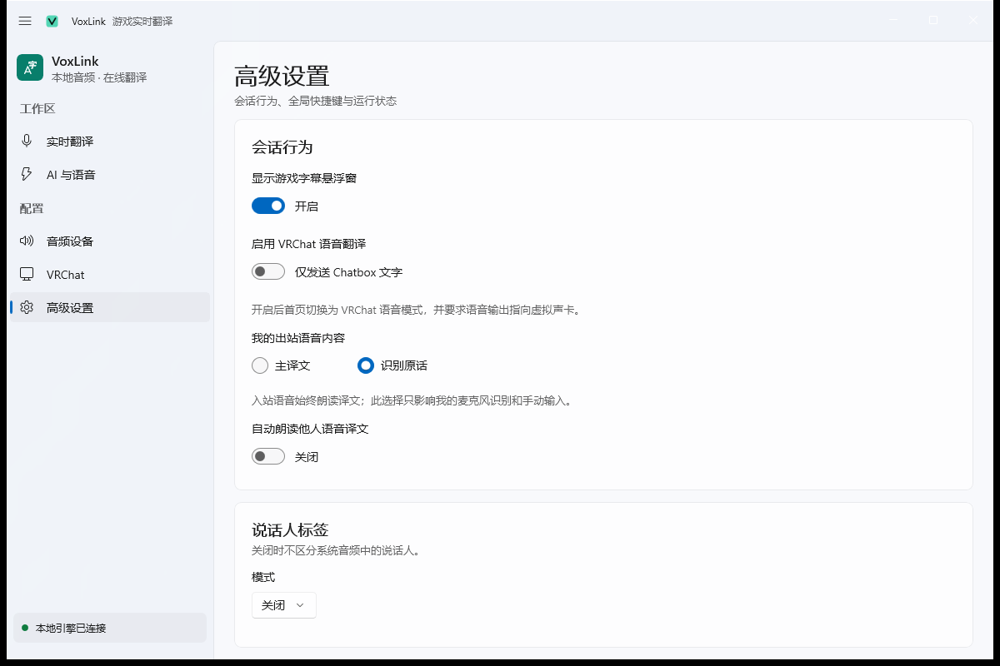

双向翻译分路
麦克风与系统回环各自独立识别与翻译，你对外和对内的语音互不干扰。
特性
从离线识别到云端流式，从文字字幕到语音注入，VoxLink 覆盖完整链路。
麦克风与系统回环各自独立识别与翻译，你对外和对内的语音互不干扰。
仅文字把译文字写入 Chatbox；VRChat 语音经虚拟声卡把 TTS 输出送进游戏麦克风。
本地 Whisper（tiny / base / small）、DashScope、Soniox、SiliconFlow、MiMo 以及 OpenAI 兼容接口。
免密翻译链路，可选 LLM 润色；支持第二目标语言，Chatbox 并列显示双语译文。
桌面 overlay 始终置顶；可选 SteamVR / OpenVR 头显字幕；简体中文统一字形归一化。
可关闭、本地聚类或云端 speaker ID，区分不同说话人（不对应 VRChat 用户名）。
API Key 与自定义请求头经 Windows DPAPI 加密存储，仅当前用户可解密。
Ctrl+Alt+Space 开始/停止，Ctrl+Alt+Enter 翻译当前输入。
界面预览
实时翻译、VRChat 路由、音频设备、高级设置，每个页面都为流程打磨。




运行原理
WASAPI 独立采集麦克风与系统回环，统一转 16 kHz 单声道 PCM。
本地 Whisper 或分段 / 流式云 ASR，VAD 智能断句。
串行最终处理，可选 LLM 润色，可选第二目标语言并列。
Chatbox 文字、虚拟声卡语音、桌面 / SteamVR 字幕多端抵达。
UI 与 Engine 分离进程经 stdin/stdout JSON Lines 通信：WinUI 3 专注工作台，独立 Engine 进程负责音频、识别、翻译与字幕宿主。
快速开始
从 Releases 获取安装包或便携包，均自带 .NET 运行时与 Windows App SDK。未代码签名，首次运行可能触发 SmartScreen。
三步 Onboarding 配置快速模式、语言与麦克风；默认只采集麦克风，需要识别其他玩家语音时再到音频页开启系统回环。
选择 Chatbox 文字模式，或安装 VB-CABLE / Voicemeeter 虚拟声卡后在 VRChat 里把麦克风指向它，即可注入 TTS 语音。
技术栈
WinUI 3 · Windows App SDK 2.3.1 · 独立 UI 进程管理设置与生命周期。
.NET 10 自托管进程 · WASAPI 音频 · Whisper.net · sherpa-onnx · 多路 ASR / 翻译 / TTS。
VRChat OSC Chatbox · MuteSelf 联动 · OpenVR / SteamVR 字幕 overlay。
GitHub Actions CI · Inno Setup 安装包 · 便携 ZIP · 标签触发自动 Release。